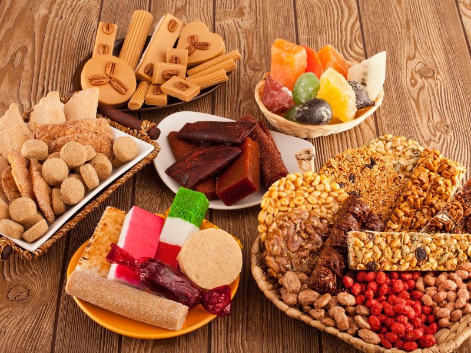
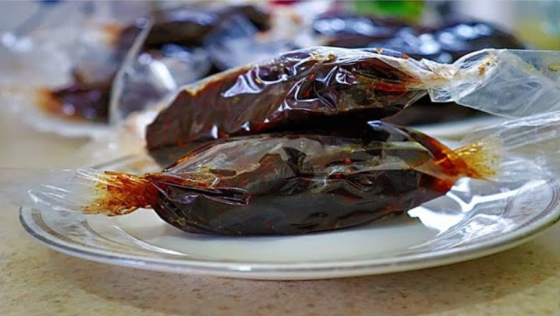
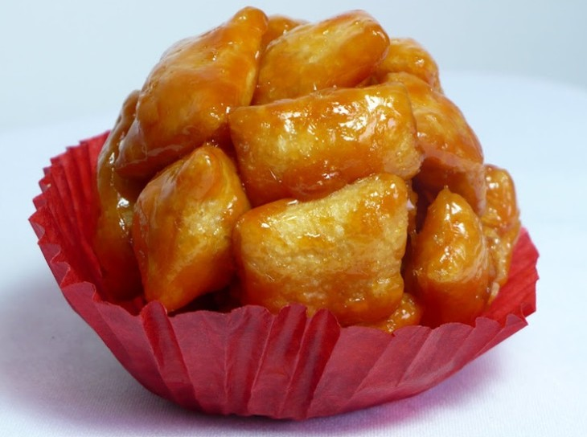

Entrada 1: Bienvenida a mis Dulces Favoritos
Publicado el 23 de febrero, 2026
¡Hola! En este blog exploraré los dulces tradicionales de México, que son parte de nuestra cultura. Desde el ácido tamarindo hasta los crujientes muéganos, cada uno tiene una historia única. Este blog es para la clase de Introducción al Desarrollo de Aplicaciones de Red.
Leer más

Entrada 2: El Dulce de Tamarindo
Publicado el 23 de febrero, 2026
El tamarindo es un dulce hecho de pulpa de fruta con azúcar y chile. Es popular en mercados mexicanos y se come como botana. Su sabor agridulce lo hace adictivo, y es originario de regiones tropicales adaptadas a México.
Leer más

Entrada 3: Los Muéganos de Puebla
Publicado el 23 de febrero, 2026
Los muéganos son bolitas de masa frita cubiertas de miel de piloncillo. Se venden en ferias y son típicos de Puebla. Su textura crujiente y dulce los hace perfectos para compartir en familia.
Leer más